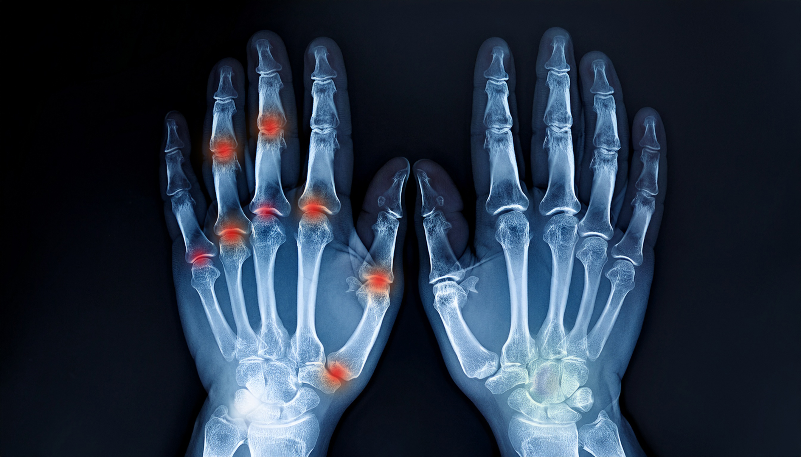
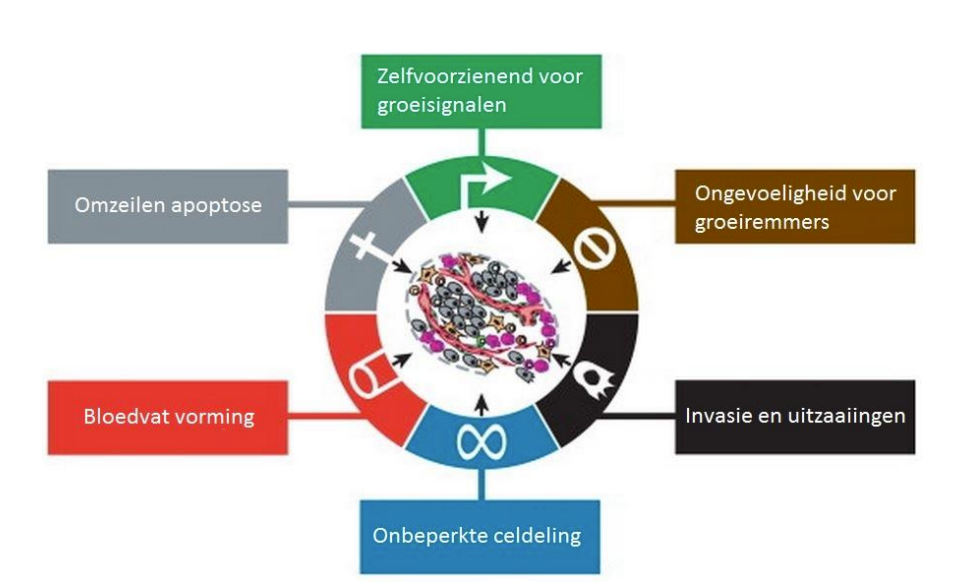
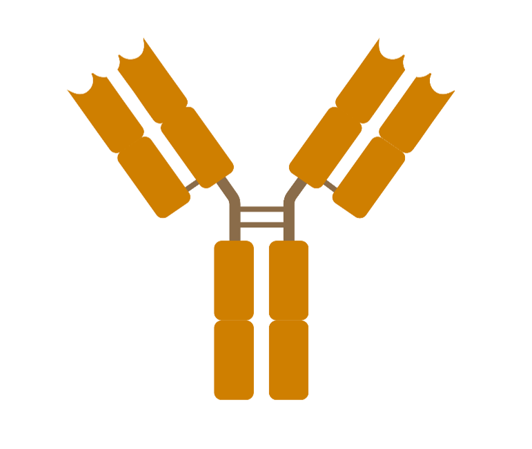
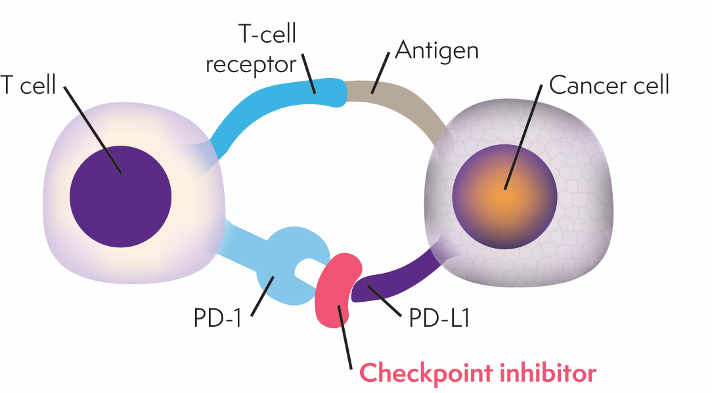
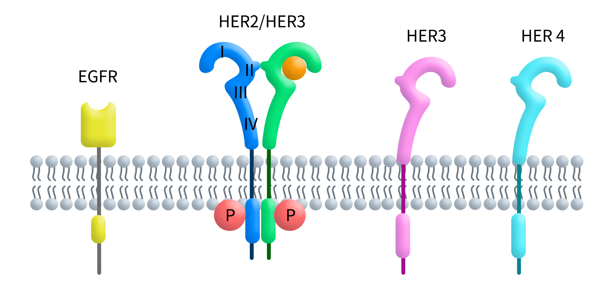
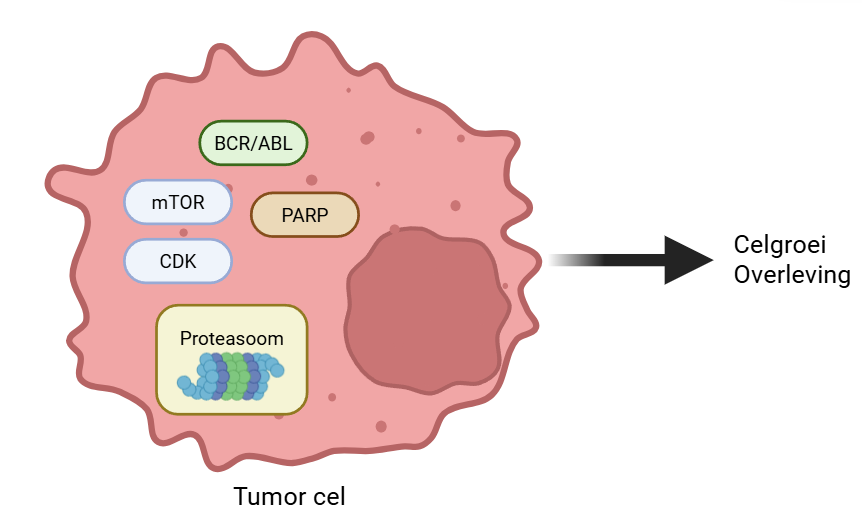
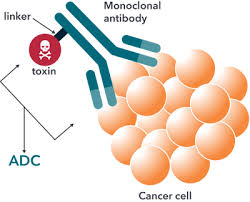
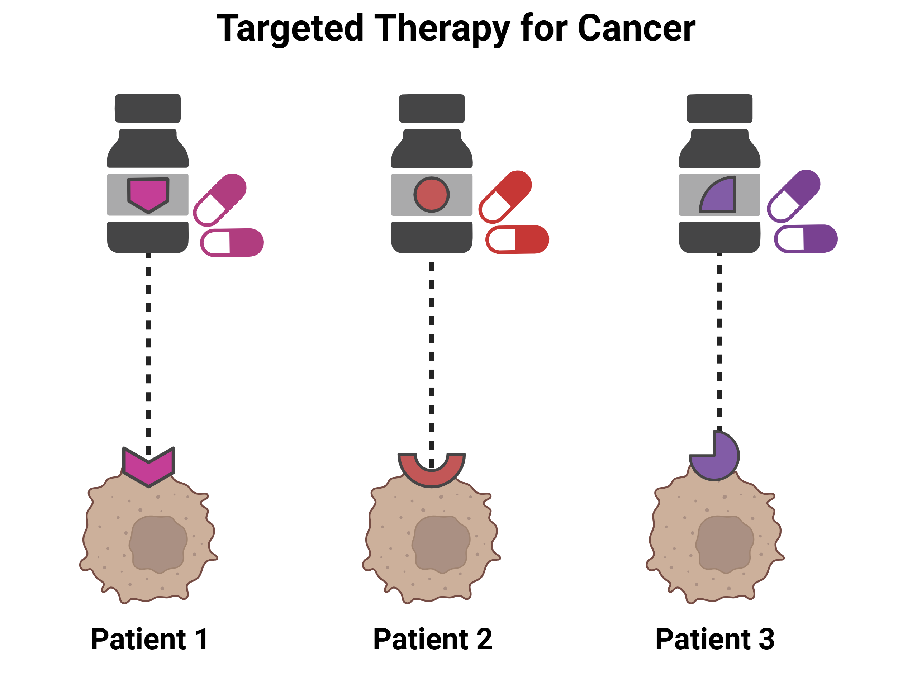

Klinische les door Sem en Sara
Auto-immuunziekte: het immuunsysteem valt de eigen gewrichten aan.
Ontstekingsfactoren (cytokines zoals TNF-alfa en interleukines) komen vrij -> chronische ontsteking.
Behandeling start met conventionele middelen (bijv. methotrexaat). Bij onvoldoende effect -> biologicals of targeted therapie.

Vroeger: behandeling doodde alle snel delende cellen - tumorcellen én gezonde cellen (haaruitval, misselijkheid, infectiegevaar).
Nu: we kennen specifieke eigenschappen van tumorcellen. Ze delen ongecontroleerd, negeren stop-signalen, vormen nieuwe bloedvaten en kunnen uitzaaien.
Moderne middelen grijpen gericht aan op deze eigenschappen - effectiever, met minder bijwerkingen.


Groot Y-vormig eiwit. Bindt specifiek aan een target op of buiten de cel.
Afgebroken door de maag -> injectie of infuus.
adalimumab (Humira), trastuzumab (Herzuma), rituximab (Truxima)...
Klein molecuul. Gaat de cel in en blokkeert een kinase (enzym voor signaaloverdracht).
Klein genoeg voor een tablet.
imatinib, baricitinib (Olumiant), osimertinib (Tagrisso)...
Cytokines zijn boodschappers die ontsteking aansturen. Bij reuma zijn ze overactief.
TNF-α remmers - bij reuma, ziekte van Crohn, colitis ulcerosa:
Interleukine-remmers - bij reuma, psoriasis, ziekte van Crohn:
Sommige middelen werken binnenin de T-cel (witte bloedcel). Ze blokkeren enzymen die ontstekingssignalen doorgeven.
JAK-remmers (-nib = tablet) - bij reuma, myelofibrose, psoriasis:
Abatacept (Orencia) - blokkeert activatiesignaal (CD80/86) naar T-cel (bij reuma en andere auto-immuunziekten).
Apremilast (Otezla) - remt PDE4, minder ontsteking bij psoriasis.
De B-cel (witte bloedcel) speelt een rol bij reuma (auto-antistoffen) en bij B-cel tumoren (lymfoom, leukemie, myeloom).
CD20-remmers - bij reuma, non-Hodgkin lymfoom, chronische lymfatische leukemie:
CD38-remmers - bij multipel myeloom:
BTK-remmers (-nib, binnenin B-cel) - bij chronische lymfatische leukemie, mantelcellymfoom:

Tumorcellen kunnen de T-cel "uitzetten" door PD-L1 aan PD-1 te koppelen. Zo ontsnappen ze aan het immuunsysteem.
Checkpointremmers blokkeren deze koppeling -> T-cel valt tumor weer aan.
Bij longkanker, melanoom, niercelkanker, blaaskanker, hoofd-halstumoren en meer.

Tumorcellen hebben receptoren die groeisignalen ontvangen. Blokkeren = groei stopt.
HER2-remmers - bij HER2-positieve borstkanker, maagkanker:
EGFR-remmers - bij niet-kleincellig longcarcinoom, colorectaalkanker:
VEGF-remmers - bij colorectaalkanker, longkanker, ovariumcarcinoom:

Sommige middelen gaan de tumorcel in en blokkeren processen die nodig zijn voor groei en overleving.
BCR-ABL remmers - bij chronische myeloïde leukemie (CML):
CDK / mTOR remmers - bij borstkanker, niercelkanker:
PARP-remmers - bij ovariumcarcinoom, BRCA+ borstkanker:
Proteasoomremmers - bij multipel myeloom:
Antilichaam-drug conjugaten (ADC): antilichaam + gifstof -> gericht afgeleverd bij tumorcel.
Overige gerichte middelen:
venetoclax (Venclyxto) - bij chronische lymfatische leukemie
enzalutamide (Xtandi) - bij gemetastaseerd prostaatcarcinoom
lenalidomide / pomalidomide - bij multipel myeloom
vedolizumab (Entyvio) - bij colitis ulcerosa, ziekte van Crohn

-mab = antilichaam (injectie) | -nib = kinaseremmer (tablet)
| Aanpak | Wat doet het? | Ziektebeeld | Voorbeeld |
|---|---|---|---|
| Signaalstoffen remmen | Minder ontsteking | Reuma | adalimumab (Humira) |
| T-cel van binnenuit | Signaal ontsteking minder | Reuma | baricitinib (Olumiant) |
| B-cel uitschakelen | Immuuncel geremd | Reuma of lymfoom | rituximab (Truxima) |
| Checkpoint opheffen | T-cel valt tumor aan | Longkanker | pembrolizumab (Keytruda) |
| Tumorreceptor blokkeren | Groei-signaal stopt | Borstkanker | trastuzumab (Herzuma) |
| Tumorcel van binnenuit | Deling / reparatie stopt | CML of borstkanker | palbociclib (Ibrance) |
Biologicals en targeted therapie werken gericht - met minder bijwerkingen.
